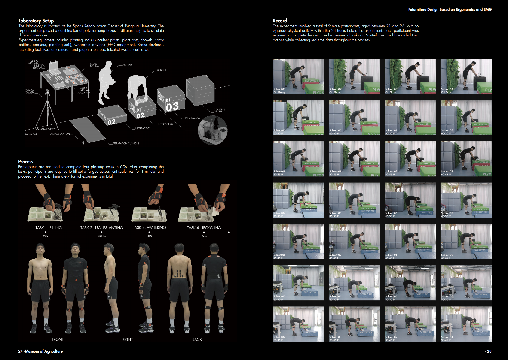
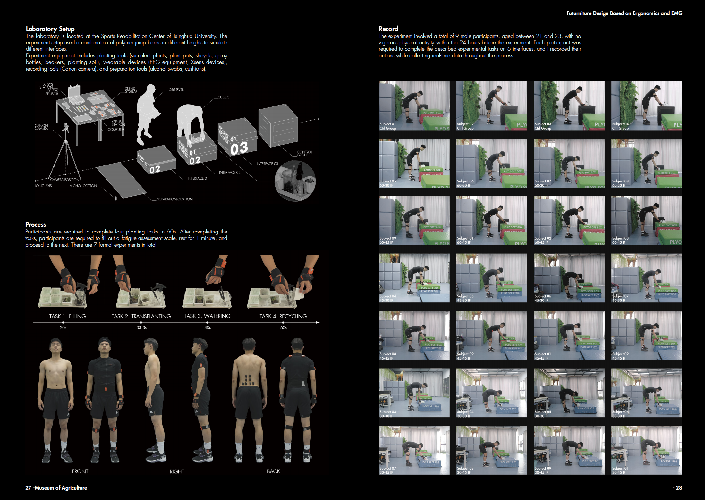
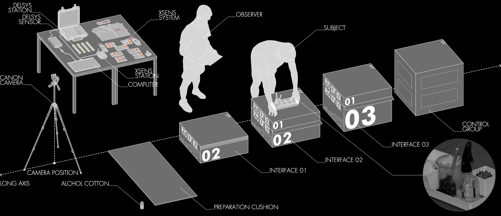

Study on the Coupling Relationship Between Work Intensity and Work Interface in Bending Posture Planting Operations (Barch Thesis)
-
The research aims to enhance the embodied experience by appropriately increasing muscle energy expenditure during the labor process. The goal of the quantitative experiment is to identify a biased work interface that causes workers' muscle energy consumption to rise moderately during interaction, without compromising their health.
1.Experimental Equipment
The experiment uses Delsys EMG equipment and Xsens MVN AWINDA motion capture wearable devices for real-time data collection of bending postures.
Delsys EMG sensors are primarily used in the field of exercise physiology to monitor and record electrical activity in muscles, allowing the assessment of muscle engagement and energy expenditure during different movements.
Xsens MVN AWINDA is primarily used in the field of motion digitization, providing highly accurate motion capture data, which is crucial for tracking body movements and postures during the experiment. This system helps in capturing the bending postures and analyzing the biomechanics involved.
2.Experimental Design
The interface variables consist of 6 combinations:
Interface Height: 30cm, 45cm, 60cm
Interface Depth: 30cm, 45cm
The control group is the standard work interface: Height 75cm, Depth 30cm.
Participants are required to complete four planting tasks within 60 seconds. After completing the tasks, participants must fill out a fatigue assessment scale and rest for 1 minute before starting the next round of the experiment. The formal experiment is conducted over 7 rounds.
3.Conclusions
By using Relative Integrative EMG (Relative IMEG) and Relative Root Mean Square (Relative RMS) to process the electromyography (EMG) data, the characteristics of different interfaces were compared. The data indicates that the 45-30 and 45-45 interface configurations (IFs) effectively increased energy expenditure during farming activities. Additionally, most participants exhibited higher muscle activation on the left side.
4.Design Strategy
Based on the experimental results, the design revolves around the interface configurations of 30-30, 45-30, 45-45, 60-45, and the standard 75-30 interface height. These interfaces are designed to increase muscle energy expenditure. The 75-30 interface height serves as the baseline, as it is generally more comfortable for most individuals. The design also considers adjustable lighting and storage functions to enhance the user experience. Additionally, an auxiliary device is placed on the left side of the body to address the issue of higher fatigue in the left-side muscles.
-
Keywords: Ergonomics、EMG
Project Type：Bachelor Thesis, School of Architecture, Tsinghua University
Time: 2022.3-2022.6
Instructor：Prof. Zhang Li, Dean of School of Architecture, Tsinghua University; Chef Architect, teamminus
Collaborator: Individual Work
Main Contributions:
1. Recruited and conduct 10 user trials to determine and compare the back muscle energy expenditure during labor activities on different interfaces;
2. Cleaned the collected EMG data using EMGworks and perform statistical comparisons of muscle energy expenditure using SPSS;
3. Analyzed the bending posture in planting scenarios based on ergonomic standards and implement targeted design improvements;
Award: A-level Bachelor Capstone Project, School of Architecture, Tsinghua University
Skill：rhino、EMGworks、SPSS、AutoCAD、Adobe Illustrator、Adobe Photoshop、Enscape

